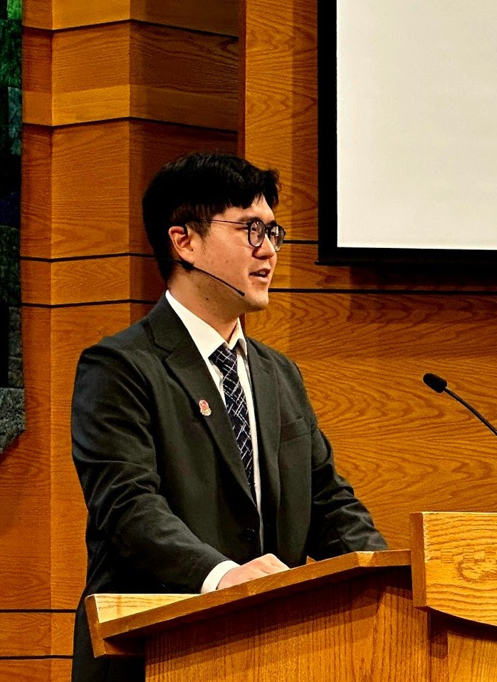

Act 01 · Praise & WordHis Story
뜨거운 찬양과 강력한 말씀
마음을 열어주는 찬양으로 하나님의 임재 앞에 나아갑니다. 오직 예수 그리스도의 복음과 선명한 말씀에 몰입하며, 영적 가슴이 다시 뛰는 은혜를 경험합니다.
First Gathering · 첫 예배
09.272026
Sunday 6PM · Sanford, Florida
하나님의 이야기가
당신의 삶에서 시작됩니다.
Eastern Time · 2026.09.27 18:00
Vision · 비전
스토리교회는 하나님이 써 내려가시는 은혜의 발자취를 온전히 담아내는 거룩한 그릇이 되고자 합니다. 우리를 부르신 거룩한 뜻을 따라, 내 안에 살아계신 예수 그리스도의 이야기를 담대히 증거하는 신실한 공동체가 되기를 꿈꿉니다. 모든 성도가 그의 스토리텔러가 되는 교회, 그것이 우리의 미션입니다.
Ministry Process · 4단계 사역 프로세스
나를 구원하신 주님의 위대한 이야기. 모든 사역과 예배의 중심에 오직 예수 그리스도의 복음을 두고, 처음 오신 분도 복음의 핵심을 쉽게 이해할 수 있도록 돕습니다.
세상 속에서 내가 직접 살아내는 이야기. 예배 관람객에 머물지 않고, 일터와 가정과 학교에서 주님의 이야기를 삶으로 증거하는 증인으로 섭니다.
말씀과 기도로 내면이 깊어지는 이야기. 222 디사이플십, Coffee Break, PRS 등 소그룹과 일대일 양육으로 한 사람을 충성스러운 제자로 훈련합니다.
우리가 함께 모여 완성해 가는 이야기. 원형 테이블 중심의 식탁 교제와 나눔을 통해, 그리스도의 성품이 선명하게 드러나는 따뜻한 공동체를 이룹니다.
Worship · 주일 예배
전통적인 관람형 예배에서 벗어나, 모든 성도가 깊이 몰입하고 마음을 나누는 참여형 예배를 드립니다.
뜨거운 찬양과 강력한 말씀
마음을 열어주는 찬양으로 하나님의 임재 앞에 나아갑니다. 오직 예수 그리스도의 복음과 선명한 말씀에 몰입하며, 영적 가슴이 다시 뛰는 은혜를 경험합니다.
결단과 행동하는 믿음
성도들의 진솔한 영상 간증에 마음을 모으고, 각자의 기도와 결단을 담은 Story Card를 팰릿 월에 직접 꽂습니다. 보는 예배에서 살아내는 믿음으로.
깊은 나눔과 파송
원형 테이블에 둘러앉아 은혜를 솔직하게 나누고 서로를 위해 중보합니다. 따뜻한 식탁 교제로 하나 된 후, 세상 속 증인으로 담대히 파송받습니다.
Ministries · 사역 · 소그룹
목회자가 직접 진행하는 1:1 또는 1:2 양육. 다음 세대 소그룹 리더를 세우는 과정입니다.
1:1 · 1:2 · 목회자 인도교회 건물이 아닌 지역 카페와 가정에서 모이는, 처음 오신 분도 편하게 참여하는 소그룹.
평일 저녁 · 주말 오후Public Reading of Scripture. 함께 소리 내어 말씀을 읽고 나누는 모임입니다.
평신도 리더 인도책을 매개로 신앙과 삶을 나누는 모임. 대상별 특성을 고려해 운영합니다.
시즌제 운영Plan Your Visit · 처음 오시는 분
New Family · 새가족 2주
예배 후 식탁 교제 때 웰컴팀이 함께합니다. 교회 머그컵과 드립백 커피, 손편지가 담긴 웰컴 키트를 드립니다.
담임목사와 함께하는 가벼운 식사 자리. 교회의 비전을 나누고, 무엇보다 당신의 이야기를 듣습니다.
People · 섬기는 사람들

Senior Pastor
정경원Kyong Won Jung
전체 사역 디렉션, 설교와 성경 공부, 교단·행정 네트워크, 예배 장소 관리.
Campus Coordinator
박준영Junyeong Park
캠퍼스 외부 컨택, 미디어·SNS 홍보와 영상, 소그룹(Coffee Break · 222 · PRS · 북클럽) 운영.

Ministry Coordinator
허강현Kanghyeon Heo
재정 회계 관리, 찬양 인도와 음악 기획, 예배당 무대 및 현장 셋업.
스토리교회는 북미주 개혁교회(CRCNA)에 속한 교회입니다. 1857년 세워진 신앙 유산 위에서, 말씀의 절대 권위를 믿고 삶의 모든 영역에서 하나님의 주권을 인정하는 건강한 신앙을 추구합니다. crcna.org →
Join · 함께하기